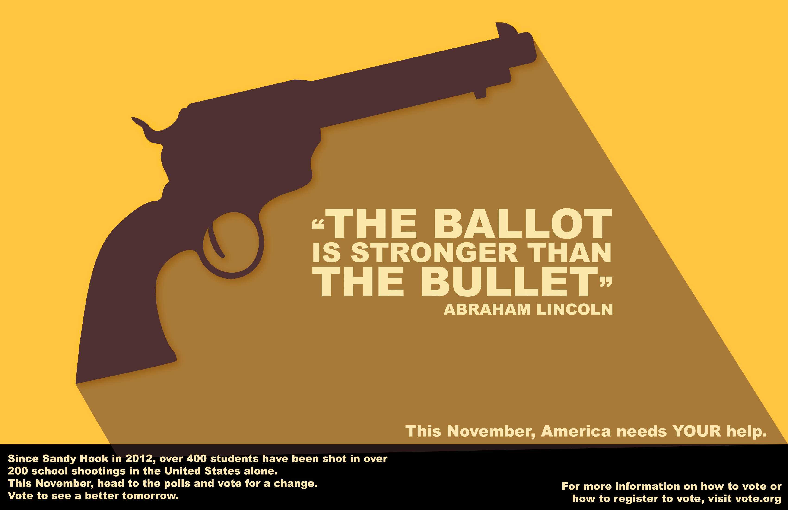

A civic engagement poster created in Adobe Illustrator for New Media Design Elements in the fall of 2018. The brief was to encourage a younger demographic to vote—I chose to address gun violence as a pressing issue that directly affects young people and their futures.
Designed a bold, attention-grabbing poster that balances urgency with clarity. Used strong typography, limited color, and impactful imagery to create a message that stops viewers and sparks reflection. The design prioritizes emotional resonance while remaining readable at a glance.
